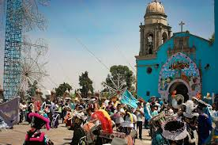

Magdalena Petlacalco
Por: Tomado de Internet
Por: Tomado de Internet

• Santa María Magdalena Petlacalco es un pueblo originario de la Alcaldía Tlalpan, al sur de la Ciudad de México. Su nombre proviene del náhuatl Petlacalco, que significa "Lugar de las casas de petate". Es un destino rural famoso por sus tradiciones, su historia, sus paisajes de dunas de arena negra y su cercanía a zonas boscosas. • Ubicación: Al sur de la CDMX, en la zona alta de Tlalpan y colindando con áreas de Xochimilco. Se encuentra a unos 25-30 minutos en auto desde la estación de Metro Universidad. • Significado: El nombre náhuatl se debe a la histórica elaboración de cestería y petates en la zona utilizando carrizo. La parte religiosa de su nombre proviene de leyendas coloniales sobre apariciones de Santa María Magdalena. • Atractivos naturales: Es ideal para el ecoturismo, destacando sus formaciones de arena (dunas) y su cercanía a entornos boscosos ideales para caminatas.